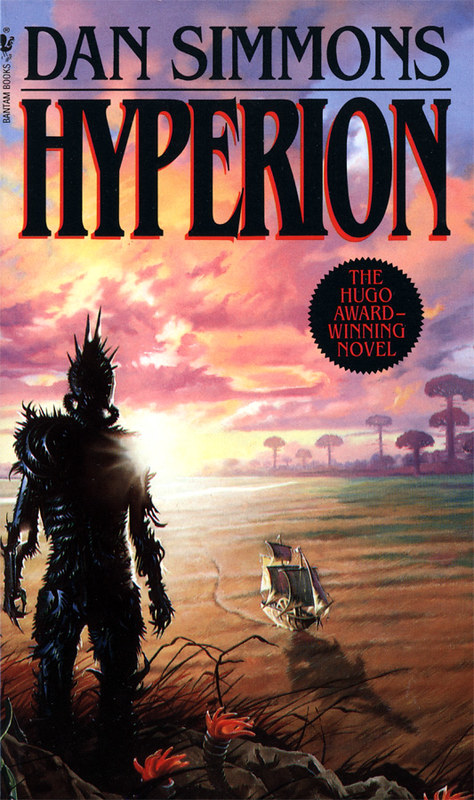

Daily Recommendations
Developer Picks, June 9, 2020
Do Androids Dream of Electric Sheep?
It was January 2021, and Rick Deckard had a license to kill. Somewhere among the hordes of humans out there, lurked several rogue androids. Deckard's assignment--find them and then..."retire" them. Trouble was, the androids all looked exactly like humans, and they didn't want to be found...Snow Crash
In reality, Hiro Protagonist delivers pizza for Uncle Enzo's CosoNostra Pizza Inc., but in the Metaverse he's a warrior prince. Plunging headlong into the enigma of a new computer virus that's striking down hackers everywhere, he races along the neon-lit streets on a search-and-destroy mission for the shadowy virtual villain threatening to bring about infocalypse. Snow Crash is a mind-altering romp through a future America so bizarre, so outrageous… you'll recognize it immediately.The Gunslinger
In the first book of this brilliant series, Stephen King introduces readers to one of his most enigmatic heroes, Roland of Gilead, The Last Gunslinger. He is a haunting figure, a loner on a spellbinding journey into good and evil. In his desolate world, which frighteningly mirrors our own, Roland pursues The Man in Black, encounters an alluring woman named Alice, and begins a friendship with the Kid from Earth called Jake. Both grippingly realistic and eerily dreamlike, The Gunslinger leaves readers eagerly awaiting the next chapter.User Recommendations
Books recommended by website visitors
